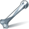
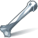

This camera enables the rendering of VR images. There are a range of projection formats offering stereoscopic output for different devices.
Note
All VR-specific controls are located under the VR tab.
Parameters
Transform
Transform Order
The left menu chooses the order in which transforms are applied (for example, scale, then rotate, then translate). This can change the position and orientation of the object, in the same way that going a block and turning east takes you to a different place than turning east and then going a block.
The right menu chooses the order in which to rotate around the X, Y, and Z axes. Certain orders can make character joint transforms easier to use, depending on the character.
Translate
Translation along XYZ axes.
Rotate
Degrees rotation about XYZ axes.
Pivot
Local origin of the object. See also setting the pivot point .
Modify Pre-Transform
This menu contains options for manipulating the pre-transform values. The pre-transform is an internal transform that is applied prior to the regular transform parameters. This allows you to change the frame of reference for the translate, rotate, scale parameter values below without changing the overall transform.
Clean Transform
This reverts the translate, rotate, scale parameters to their default values while maintaining the same overall transform.
Clean Translates
This sets the translate parameter to (0, 0, 0) while maintaining the same overall transform.
Clean Rotates
This sets the rotate parameter to (0, 0, 0) while maintaining the same overall transform.
Clean Scales
This sets the scale parameter to (1, 1, 1) while maintaining the same overall transform.
Extract Pre-transform
This removes the pre-transform by setting the translate, rotate, and scale parameters in order to maintain the same overall transform. Note that if there were shears in the pre-transform, it can not be completely removed.
Reset Pre-transform
This completely removes the pre-transform without changing any parameters. This will change the overall transform of the object if there are any non-default values in the translate, rotate, and scale parameters.
Keep Position When Parenting
When the object is re-parented, maintain its current world position by changing the object’s transform parameters.
Child Compensation
When the object is being transformed, maintain the current world transforms of its children by changing their transform parameters.
Enable Constraints
Enable Constraints Network on the object.
Constraints
Path to a CHOP Constraints Network. See also creating constraints.
Tip
You can you use the Constraints drop down button to activate one of the Constraints Shelf Tool. If you do so, the first pick session is filled automatically by nodes selected in the parameter panel.
Note
Lookat and Follow Path parameters on object nodes are deprecated in favor of  Look At and
Look At and  Follow Path constraints.
The parameters are only hidden for now and you can set their visibitily if you do edit the node’s parameter interface.
Follow Path constraints.
The parameters are only hidden for now and you can set their visibitily if you do edit the node’s parameter interface.
Render
Display
Whether or not this object is displayed in the viewport and rendered. Turn on the checkbox to have Houdini use this parameter, then set the value to 0 to hide the object in the viewport and not render it, or 1 to show and render the object. If the checkbox is off, Houdini ignores the value.
Set Wireframe Color
Use the specified wireframe color
Wireframe Color
The display color of the object
Viewport Selecting Enabled
Object is capable of being picked in the viewport.
Select Script
Script to run when the object is picked in the viewport. See select scripts .
Cache Object Transform
Caches object transforms once Houdini calculates them. This is
especially useful for objects whose world space position is
expensive to calculate (such as  Sticky objects),
and objects at the end of long parenting chains (such as
Bones). This option is turned on by default for Sticky and
Bone objects.
Sticky objects),
and objects at the end of long parenting chains (such as
Bones). This option is turned on by default for Sticky and
Bone objects.
See the OBJ Caching section of the Houdini Preferences window for how to control the size of the object transform cache.
View
Icon scale
Scales the viewport geometry. This parameter is only for display purposes.
Resolution
The output resolution in pixels. Standard presets are available via the pull down menu to the right of the parameter.
Pixel aspect ratio
The pixel aspect ratio of the output image.
Projection
Type of camera projection used for rendering (for example, perspective or orthographic).
Perspective
This simulates the classic pinhole camera where camera rays emanate from a common camera origin through a flat camera plane.
Orthographic
This uses parallel camera rays that are orthogonal to the (flat) camera plane. The width of the view volume is determined by the Ortho Width parameter below.
Polar (panoramic)
This projection uses a spherical camera plane for rendering.
Cylindrical (panoramic)
This projection uses a cylindrical camera plane for rendering.
Lens Shader: Use a lens shader to initialize rays for ray tracing.
Selecting Polar, Cylindrical or Lens Shader will automatically switch the Rendering Engine (on the output driver) to Ray Tracing, as it is impossible to render these projections with micropolygon rendering.
Focal length
Camera focal length (zoom).
Focal units
The units used for the focal length.
Aperture

Width of the visible field.
Note
The correct aperture width for Super 35mm format motion picture film is 24.89.
Otho width
Width of orthographic view volume when using Projection is set to Orthographic.
Near clipping
Position of near clipping plane.
Far clipping
Position of far clipping plane.
Screen window X/Y
Define the center of the window during the rendering process.
Screen window size
Scale for expanding the cropped area specified by the Crop parameters.
Screen window mask
Sets the screen window mask to cover the bounding box of the selected object(s).
Left crop
Left cropping margin for camera’s view area.
Right crop
Right cropping margin for camera’s view area.
Bottom crop
Bottom cropping margin for camera’s view area.
Top crop
Top cropping margin for camera’s view area.
Crop Mask
Sets the pixel crop region to cover the bounding box of the selected object(s).
Note
You can optionally add the spare parameter Visible Objects from the Parameter Interface. This allows you to control which objects are displayed in the viewport when looking through the camera.
Sampling
Shutter time
The portion of the frame interval that the camera shutter is
open. Used to determine motion blur. [0,1]
Focus distance
The lens focal distance and distance from the camera at which objects will be in focus. This is only used when rendering using depth of field. Objects outside this distance will be blurred.
F-stop
Lens fstop. This is only used when rendering using depth of field. Determines blurriness of depth of field effects.
Bokeh
Filter kernel used in depth of field rendering. Use the pop-up menu to the right of the text box to choose from the available options.
Radial bokeh (radial)
Use a gaussian filter kernel (highest quality).
Image file bokeh (file)
Use an image file
Box filter bokeh (box)
Use a box filter kernal.
Disable bokeh (null)
Do not filter.
Bokeh image file
The file to use for "file" shaped bokeh. White/black cutout images that delineate the shape of the lens are good candidates, where white regions represent the areas that light passes through.
Bokeh rotation
The rotation for "file" shaped bokeh.
VR
Mode
Selects the layout of stereo pairs. Stereo outputs pairs side-by-side. Left Over/Right Under outputs pairs with left on top and right on bottom. Right Over/Left Under outputs pairs with right on top and left on bottom. Left Eye outputs only the left eye. Right Eye outputs only the right eye.
Projection
Selects the type of projection to use for stereo pairs. Latlong uses a spherical projection. Perspective uses a standard perspective projection. Cube Map - NVIDIA uses a cube format like the 'NVIDIA Texture Tools' utility. Cube Map - 3×2 uses a stacked cube format.
Preserve Aspect Ratio
Toggling this parameter will keep the camera’s image aspect ratio the same independent of the Projection type.
Merge Mode
The type of correction to apply at the poles of the projection. None disables correction. Linear blends the correction between Merge Angle and the poles. Smooth blends the correction using a smooth curve between Merge Angle and the poles.
Merge Angle
The angle (in degrees) from the poles beyond which correction is applied.
Field Of View
When Projection is set to Perspective this controls the field of view of the camera.
Near Clipping
When Projection is set to Perspective this controls the near clipping plane of the camera.
Far Clipping
When Projection is set to Perspective this controls the far clipping plane of the camera.
Distortion
When Projection is set to Perspective this controls the distortion of the lens. Positive values result in a "barrel" distortion effect. Negative values result in a "pin-cushion" distortion effect.
Cubic Distortion
When Projection is set to Perspective this controls the cubic coefficient of the lens distortion.
Eye Separation
Determines the distance between left and right eyes, or "interpupillary distance" (IPD), of the viewer. This should be set according to the scale of your scene. The default value is set based on average human metrics in meters.
Eye To Neck Distance
Determines the distance from the eyes to the neck of the viewer. The camera will be offset in Y along this distance, and if rotated will pivot from the base of the neck, not the eye-nodal point. This should be set according to the scale of your scene. The default value is set based on average human metrics in meters.
| See also |